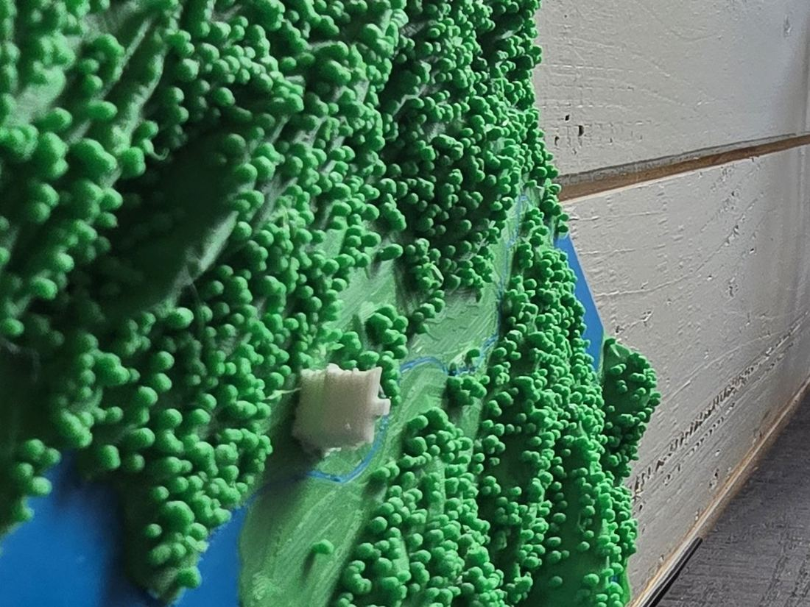
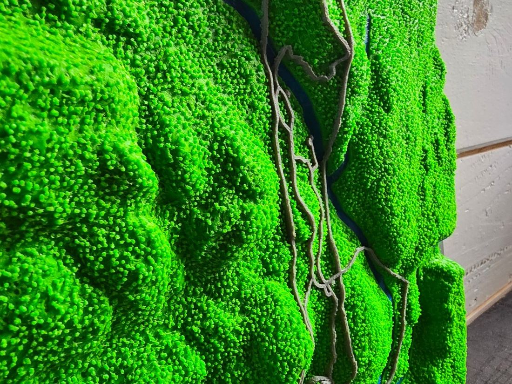

Terre à bois, érablière, chalet
Sur une carte, sa terre tient en quelques lignes. En relief, elle la reconnaît : coteaux, ruisseaux, vraie hauteur des arbres.
CARTE-CADEAU NUMÉRIQUE GEORAMA
Une pièce unique : son lac, sa terre ou sa montagne. Et ceux de personne d'autre. La personne choisit son lieu, voit son aperçu 3D gratuit, et Georama l'imprime en relief au Lac-Saint-Jean.
275 $, maquette Signature livrée · Carte numérique envoyée par courriel, à la date et à l'heure de votre choix · N'expire pas

Une maquette Signature
10 × 12 po · jusqu'à 7 couleurs · livrée
GEORAMA
Trop tard pour Noël ? Pas avec une carte-cadeau.
Achetée le 24 décembre, elle peut arriver dans sa boîte courriel le matin de Noël.
TOUS LES TYPES DE MAQUETTES
Vous n'avez pas à connaître ses lots ni son lac préféré. N'importe quel lieu du Québec, qu'elle en soit propriétaire ou non.
COMMENT ÇA MARCHE
Elle couvre une maquette Signature livrée. Ajoutez votre message personnalisé.
C'est une carte numérique : elle arrive par courriel, tout de suite ou à la date et à l'heure choisies, comme le matin de Noël ou le jour de sa fête.
Elle cherche son lieu dans l'outil Georama, ajoute ses repères 3D, ses bâtiments ou ses chemins, et choisit ses couleurs, sans rien payer. Elle entre sa carte-cadeau seulement à la commande.
CE QUE LA CARTE COMPREND
La carte donne droit à une maquette Signature de 10 × 12 po, jusqu'à 7 couleurs, livrée. Rien d'autre à payer, aucune taxe à ajouter. Elle reste valable même si le prix des maquettes augmente.
MAQUETTE SIGNATURE
275 $
La personne prend le temps de choisir son territoire.
Elle voit sa maquette en 3D, gratuitement, avant d'utiliser sa carte.
Imprimée au Lac-Saint-Jean, à partir du relief LiDAR du Québec. Aucune taxe à ajouter.
Non. N'importe quel lieu du Québec fonctionne : le lac où elle pêche, la montagne qu'elle a gravie, le chalet familial ou son quartier.
Elle reçoit un code par courriel. Elle crée sa maquette sur georama.ca, puis entre le code au moment du paiement.
Environ 3 semaines après sa commande : 2 semaines de fabrication, puis environ 7 jours de livraison.
La carte donne droit à une maquette Signature de 10 × 12 po, jusqu'à 7 couleurs, livrée. Elle est à l'abri des hausses de prix : si le prix monte, la carte couvre quand même la maquette. La carte n'est pas remboursable.
Non, c'est une carte numérique. Elle arrive par courriel, avec votre message, au moment que vous choisissez. Après l'achat, Georama vous envoie aussi la carte en PDF : vous pouvez l'imprimer et la remettre en cadeau.
Non, elle n'expire pas.
Son territoire, en relief, au mur du salon ou sur la table du chalet.
Offrir une carte-cadeau